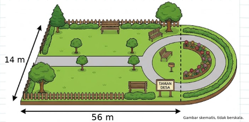
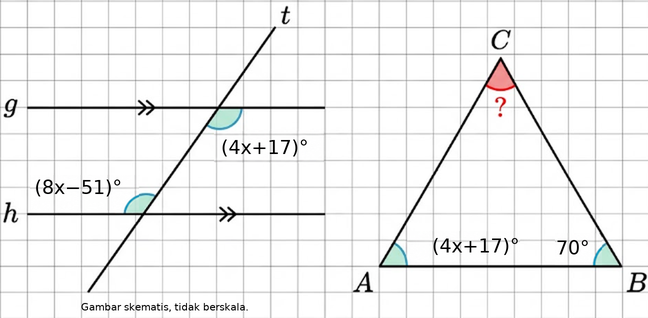
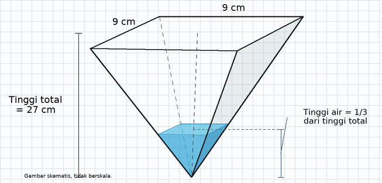
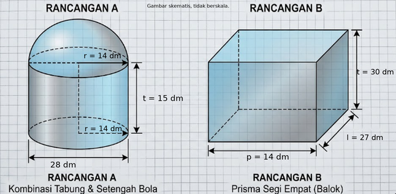
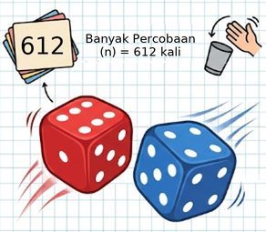

30 soal, 5 gambar. Seed 1. LOCAL_RENDERED; untuk review operator, belum publikasi.
Suhu di dalam sebuah lemari pendingin adalah -18°C. Suhu kemudian meningkat sebesar 4°C. Suhu lemari pendingin sekarang adalah ....
Kunci: C
Suhu akhir = -18 + 4 = -14°C. Jawaban: C. -14°C
Rina memiliki uang Rp145.000,00. Ia membeli buku seharga Rp27.000,00 dan alat tulis seharga Rp7.000,00. Sisa uang Rina adalah ....
Kunci: A
Belanja = Rp27.000 + Rp7.000 = Rp34.000. Sisa = Rp145.000 − Rp34.000 = Rp111.000. Jawaban: A. Rp111.000,00
Perhatikan dua cara perhitungan berikut. Budi: -21 + 8 × (-3) Andi: (-21 + 8) × (-3) Pernyataan yang tepat mengenai hasil perhitungan Budi dan Andi adalah ....
Kunci: D
Perkalian dikerjakan dahulu pada bentuk Budi: -21 + 8 × (-3) = -45. Pada bentuk Andi, kurung didahulukan: (-21 + 8) × (-3) = 39. Jawaban: D. Hasil Budi adalah -45 dan hasil Andi adalah 39.
Empat siswa menghitung hasil dari 16 ÷ (-4) − (-11). Andi: -15; Budi: -4; Citra: -7; Deni: 7. Siswa yang memperoleh hasil benar adalah ....
Kunci: D
Pembagian menghasilkan -4; -4 − (-11) = 7. Hasil benar diperoleh Deni. Jawaban: D. Deni
Sebuah bilangan dikalikan 9, kemudian hasilnya dikurangi 4. Hasil akhirnya adalah 257. Pernyataan yang tepat untuk menentukan bilangan tersebut adalah ....
Kunci: C
9x − 4 = 257; 9x = 257 + 4 = 261; x = 261 ÷ 9 = 29. Jawaban: C. Bilangan tersebut diperoleh dari (257 + 4) ÷ 9, sehingga hasilnya 29.
Perhatikan operasi bilangan berikut. Pilih semua jawaban yang benar!
Kunci: A,C
Penjumlahan = -22; pembagian = -10, bukan 6; perkalian dua negatif = 84; pengurangan bilangan negatif = 16, bukan 12. Penilaian pernyataan: A: Benar — (-25) + 3 = -22; B: Salah — 60 ÷ (-6) = 6; C: Benar — (-12) × (-7) = 84; D: Salah — 14 − (-2) = 12
Penyelesaian 1: −5 × (8−12)=20. Penyelesaian 2: (−5×8)−12=−52. Pilih semua pernyataan yang benar.
Kunci: B,D
Penyelesaian 1: 8 - 12 = -4 -5 × (-4) = 20 Jadi, penyelesaian 1 benar. Penyelesaian 2: (-5 × 8) - 12 = -40 - 12 = -52 Kedua bentuk operasi tersebut berbeda karena pada penyelesaian 1 terdapat tanda kurung yang mengubah urutan pengerjaan. Jadi: A → Salah B → Benar C → Salah D → Benar Jawaban yang benar adalah B dan D .
Sebuah toko memberikan potongan harga 20% untuk sepatu berharga Rp720.000,00. Setelah diskon, pembeli dikenakan biaya tambahan Rp45.000,00. Tentukan Benar atau Salah untuk setiap pernyataan!
Kunci: 1,3
Diskon = 20% × Rp720.000 = Rp144.000; harga setelah diskon Rp576.000; total pembayaran Rp621.000. Penilaian pernyataan: 1: Benar — Besar diskon sepatu adalah Rp144.000,00.; 2: Salah — Harga sepatu setelah diskon adalah Rp621.000,00.; 3: Benar — Harga sepatu setelah diskon dan biaya tambahan adalah Rp621.000,00.; 4: Salah — Pembeli harus membayar Rp666.000,00.
Area A memerlukan 8(7x+10) buah ubin, sedangkan Area B memerlukan 7(2x−4) buah ubin. Bentuk aljabar paling sederhana untuk total ubin adalah ....
Kunci: A
Distributif menghasilkan koefisien x sebesar 8 × 7 + 7 × 2 = 70 dan konstanta 8 × 10 − 7 × 4 = 52. Total = 70x+52. Jawaban: A. 70x+52
Baris pertama berisi 19 kursi, baris kedua 21 kursi, dan baris ketiga 23 kursi. Banyak kursi mengikuti barisan aritmetika sampai baris ke-19. Banyak kursi pada baris terakhir adalah ....
Kunci: A
Suku pertama 19, beda 2. U_19 = 19 + (19−1) × 2 = 55 kursi. Jawaban: A. 55 kursi
Rian memiliki kupon Rp230.000,00. Ia membeli tas Rp55.000,00. Sisa kupon dipakai membeli buku seharga Rp25.000,00 per buku. Banyak buku maksimum agar belanja tidak melebihi kupon adalah ....
Kunci: B
Batas belanja: 25.000x + 55.000 ≤ 230.000; x ≤ 175.000/25.000. Banyak buku integer maksimum adalah 7. Jawaban: B. 7 buah
Ibu Maya membeli 3 paket spidol dan 2 penggaris seharga Rp70.000,00. Pak Hari membeli 2 paket spidol dan 4 penggaris seharga Rp60.000,00. Harga 1 paket spidol dan 1 penggaris adalah ....
Kunci: C
Persamaan 3x+2y=70.000 dan 2x+4y=60.000 menghasilkan x=Rp20.000, y=Rp5.000. Jumlahnya Rp25.000, bukan penjumlahan yang salah pada source. Jawaban: C. Rp25.000,00
Tarif sewa sepeda f(x)=13.000+2.000x rupiah, dengan domain x∈{1,2,3,4}. Klaim I: range adalah (15.000, 17.000, 19.000, 21.000). Klaim II: pembayaran Rp19.000,00 berarti pemakaian 3 jam dan masih dalam domain. Pernyataan yang tepat adalah ....
Kunci: A
Hitung f(1)..f(4); range klaim benar bila tanpa kesalahan pada f(1). Klaim I: True. Pembayaran setara 3 jam; domain 1..4, sehingga Klaim II: True. Jawaban: A. Klaim I benar dan Klaim II benar
Harga sewa 2 stel Busana A dan 3 stel Busana B adalah Rp350.000,00. Harga 4 stel Busana A dan 1 stel Busana B adalah Rp400.000,00. Pilih semua pernyataan yang benar!
Kunci: A,B,C,D
SPLDV 2A+3B=350.000, 4A+B=400.000 memiliki solusi A=85.000, B=60.000. Selisih 25.000; biaya 2A+2B=290.000. Keempat pernyataan benar. Penilaian pernyataan: A: Benar — Harga 1 stel Busana A adalah Rp85.000,00.; B: Benar — Harga 1 stel Busana B adalah Rp60.000,00.; C: Benar — Selisih harga kedua busana adalah Rp25.000,00.; D: Benar — Total biaya 2 Busana A dan 2 Busana B adalah Rp290.000,00.
Setoran pertama minggu ke-1 sebesar Rp34.000,00. Setoran bertambah Rp8.000,00 setiap minggu hingga minggu ke-4. Tentukan Benar atau Salah untuk setiap pernyataan!
Kunci: 1,2,3
U_n=a+(n−1)d=58.000. S_n=n(a+U_n)/2=184.000. Rata-rata S_n/n=46.000. Ketiganya benar. Penilaian pernyataan: 1: Benar — Setoran minggu ke-4 adalah Rp58.000,00.; 2: Benar — Total tabungan selama 4 minggu adalah Rp184.000,00.; 3: Benar — Rata-rata setoran per minggu adalah Rp46.000,00.
Diberikan P=9(x+4)−2(x−8) dan Q=7x+52. Tentukan Benar atau Salah untuk setiap pernyataan analisis!
Kunci: 1,3
−2(x−8)=−2x+16, bukan −2x−16. P=(9−2)x+36+16=7x+52=Q. Substitusi x=3 memberi 73. Penilaian pernyataan: 1: Benar — P ekuivalen dengan Q untuk semua nilai x.; 2: Salah — Distributif pada P menghasilkan 9x+36−2x−16.; 3: Benar — Jika x=3, maka P=73.
Titik A(8, 6) dicerminkan terhadap y=x, kemudian ditranslasikan oleh T=(8, -7). Koordinat bayangan akhir adalah ....
Kunci: A
Refleksi y=x menukar koordinat menjadi (6, 8). Translasi memberi (6+8, 8+-7)=(14, 1). Jawaban: A. (14, 1)

Taman merupakan gabungan persegi panjang berukuran 56 m × 14 m dan setengah lingkaran pada sisi lebarnya (14 m). Luas total taman adalah .... (π=22/7)
Kunci: A
Diameter setengah lingkaran 14, radius 7. Luas persegi panjang 784; setengah lingkaran 77; total 861 m². Jawaban: A. 861 m²

Dua garis sejajar dipotong transversal. Sudut berseberangan dalam adalah (4x+17)° dan (8x−51)°. Sudut ini sehadap dengan sudut pertama segitiga; sudut kedua 70°. Besar sudut ketiga adalah ....
Kunci: A
Sudut berseberangan dalam sama: 4x+17=8x−51, sehingga x=17, sudut=85°. Sudut ketiga=180−85−70=25°. Jawaban: A. 25°

Limas segi empat beraturan terbalik memiliki rusuk alas 9 cm dan tinggi 27 cm. Air mencapai 1/3 dari tinggi wadah, diukur dari puncak bawah. Volume air adalah ....
Kunci: A
Limas air sebangun dengan skala 1/3. Rusuk air 3 cm, tinggi air 9 cm. Volume total 729; volume air=(1/3)³×729=27 cm³. Jawaban: A. 27 cm³
Foto ditempel pada karton berukuran 45 cm × 90 cm (lebar × tinggi). Sisa kiri, kanan dan atas masing-masing 2 cm. Foto dan karton sebangun. Pilih semua pernyataan yang benar!
Kunci: A,B,C
Lebar foto 41; tinggi=90×41/45=82. Bawah=90−82−2=6. Rasio luas 1.681:2.025. Sisa luas sebenarnya 688, bukan 720. Penilaian pernyataan: A: Benar — Tinggi foto adalah 82 cm.; B: Benar — Sisa karton bagian bawah adalah 6 cm.; C: Benar — Perbandingan luas foto dan karton adalah 1.681:2.025.; D: Salah — Luas sisa karton adalah 720 cm².

Rancangan A: tabung radius 14 dm, tinggi 15 dm ditutup kubah setengah bola radius 14 dm. Rancangan B: balok 14 dm × 27 dm × 30 dm. Gunakan π=22/7; 1 dm³=1 liter. Pilih semua pernyataan yang benar! Nilai desimal dibulatkan dua angka di belakang koma.
Kunci: A,B,D
V_tabung=9.240; V_kubah=2πr³/3≈5.749,33; total A≈14.989,33; balok B=11.340. Tabung<B<total A; selisih dibulatkan=3.649,33. Kubah<11.450. Penilaian pernyataan: A: Benar — Total kapasitas A lebih besar daripada B.; B: Benar — Selisih kapasitas A dan B adalah 3.649,33 liter.; C: Salah — Kubah setengah bola A menampung lebih dari 11.450 liter.; D: Benar — Volume bagian tabung A lebih kecil daripada kapasitas B.
Segitiga PQR memiliki P(1, 2), Q(5, 2), R(1, 5). Dilatasi terhadap O(0,0) dengan skala k=-4 menghasilkan P′Q′R′. Tentukan Benar atau Salah setiap pernyataan!
Kunci: 1,3
R′=kR=(-4, -20). Luas awal 6, bayangan 96 (faktor k²), bukan 4. Kaki 4/3 memiliki sisi miring 5×1; bayangannya 20. Penilaian pernyataan: 1: Benar — Bayangan R adalah R′(-4, -20).; 2: Salah — Luas bayangan adalah 4 kali luas awal.; 3: Benar — Panjang Q′R′ adalah 20 satuan.
Perhatikan data nilai: 49, 87, 76, 87, 97. Nilai yang paling sering muncul adalah ....
Kunci: C
Nilai 87 muncul dua kali, sedangkan 49, 76, 97 masing-masing sekali. Modus tunggal adalah 87. Jawaban: C. 87
Sebuah dadu fair bersisi enam dilempar satu kali. Peluang munculnya mata dadu 3 adalah ....
Kunci: B
Sebuah dadu memiliki 6 kemungkinan hasil, yaitu 1, 2, 3, 4, 5, dan 6. Hanya ada 1 hasil yang berupa angka 3. Jadi, peluang muncul angka 3 adalah 1 dari 6.
Frekuensi waktu belajar harian: 1 jam=9 siswa; 2 jam=3; 3 jam=5; 4 jam=4; 5 jam=3. Efektif berarti waktu belajar ≥ rata-rata kelompok. Persentase siswa efektif adalah ....
Kunci: C
Jumlah siswa 24, jumlah jam tertimbang 61. Rata-rata exact=61/24 (nilai tampilan≈2,54); klasifikasi memakai pecahan exact. Siswa efektif 12; persentase=12/24×100%=50%. Jawaban: C. 50%
Ringkasan nilai kelas X: rata-rata 83, jangkauan 25, tertinggi 95, median 80. Kelas Y: rata-rata 83, jangkauan 24, tertinggi 95, median 83. Kesimpulan yang tepat adalah ....
Kunci: B
Jangkauan adalah maksimum−minimum. Kelas X memiliki jangkauan 25, Y 24; rentang kelas Y lebih sempit. Range saja tidak membuktikan variance lebih kecil. Jawaban: B. Kelas Y memiliki rentang nilai lebih sempit karena selisih nilai maksimum dan minimum lebih kecil.

Dua dadu fair bermuka enam dilempar bersama sebanyak 612 kali. Pilih semua pernyataan yang benar berdasarkan peluang dan frekuensi harapan!
Kunci: A,C,D
Ada 36 pasangan. Jumlah7:6 pasangan (1/6); kembar:6 pasangan (1/6, bukan1/12). Jumlah≥12: 1 pasangan, harapan 17. Jumlah prima2,3,5,7,11:15 pasangan, harapan 255. Penilaian pernyataan: A: Benar — Peluang jumlah 7 adalah 1/6.; B: Salah — Peluang kedua dadu kembar adalah 1/12.; C: Benar — Frekuensi harapan jumlah 12 atau lebih adalah 17 kali.; D: Benar — Frekuensi harapan jumlah bilangan prima adalah 255 kali.
Sekolah memiliki 600 siswa dalam 18 kelas. Strategi1: pertanyaan mengarahkan tentang kantin kepada 30 siswa yang makan di kantin. Strategi2: memilih acak 10 siswa setiap kelas. Strategi3: menganggap jenis makanan favorit sebagai data kuantitatif kontinu. Tentukan Benar atau Salah.
Kunci: 1,2
1. Evaluasi Pernyataan A: Pertanyaan pada Strategi 1 bersifat mengarahkan responden untuk setuju ( bias ), serta mengambil sampel hanya dari siswa yang ada di kantin (mengabaikan siswa yang tidak suka ke kantin). (BENAR) 2. Evaluasi Pernyataan B: Strategi 2 mengambil perwakilan proporsional dari setiap tingkatan kelas secara acak, sehingga seluruh kelompok populasi terwakili dengan baik. (BENAR) 3. Evaluasi Pernyataan C: "Jenis makanan favorit" (seperti bakso, soto, nasi goreng) berbentuk kata/kategori, sehingga tergolong data kualitatif (kategori), bukan data kuantitatif kontinu. (SALAH) Kesalahan umum yang diantisipasi: Siswa menganggap semua data berbentuk angka atau pilihan dalam kuesioner otomatis merupakan data kuantitatif kontinu.
Tujuh bilangan bulat positif terurut adalah a, 33, 38, 43, 53, b, 73. Jangkauan 45, median 43, rata-rata 48. Tentukan Benar atau Salah setiap kesimpulan!
Kunci: 1
a=73−45=28; jumlah data=7×48 sehingga b=68. Semua nilai berbeda: tidak memiliki modus tunggal. Mengganti maksimum menjadi 98 tidak mengubah data keempat/median 43. Penilaian pernyataan: 1: Benar — Nilai a=28 dan b=68.; 2: Salah — Data memiliki modus tunggal, yaitu 43.; 3: Salah — Jika maksimum (73) diganti 98, median naik 1.